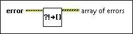

Error Cluster to Array of Errors VI
Owning Palette: Multiple Errors VIs
Requires: Base Development System
Converts a cluster of errors into an array of encoded errors. This VI returns an empty array if the error cluster does not include any errors.
To create a cluster of errors from multiple VIs or functions, use the Merge Errors function.
 Add to the block diagram Add to the block diagram |
 Find on the palette Find on the palette |